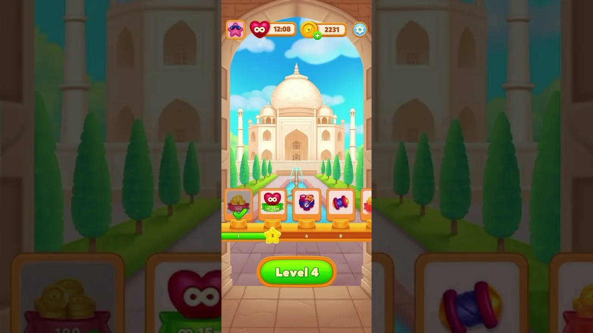
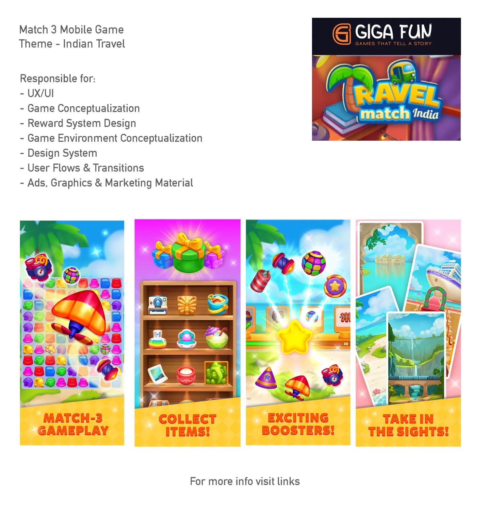

A casual match-3 mobile game at Giga Fun Studios, themed around Indian travel. Seven months from concept to shipped. Lead experience designer — UX, flows, reward systems, visual strategy, design system, transitions, graphics, and marketing — with a dedicated UI artist producing in-game UI assets to direction.

Match-3 as a mechanic is over a decade old. The core action — swap two tiles, line up three, cascade — has been iterated past the point where another new title can win on gameplay alone. What's changed is what match-3 wraps itself in: Candy Crush built a candy universe, Homescapes built a butler and a manor, Royal Match built a king and a castle, Fishdom built an aquarium. The game loop is shared; the fiction is proprietary.
This means a new casual match-3 has to do its strategic work before the player sees a single tile. The theme is where the product differentiates, where the audience is recruited, and where long-term retention is either earned or forfeited. Getting the theme right is not an art-direction exercise downstream of design — it is the design.
The brief for this project sat on top of a specific opportunity: Indian mobile gaming is one of the fastest-growing mobile markets in the world, but the catalogue of premium-feeling casual games with authentically Indian cultural texture — not western games with an Indian skin — was thin. The hypothesis: a casual match-3 grounded in Indian travel, iconography, and sensibility could reach an audience that Candy Crush reaches but doesn't speak to on home turf.
The shorthand for "theme" in casual games is usually just the art layer — paint candies onto tiles, paint a butler into the menu, done. That works, but it leaves value on the table. A full theme-stack has three layers, each doing different strategic work.
A theme that lives only at the surface is a skin. A theme that reaches into structure becomes the game's shape of progression — which is, as Jesse Schell argued in The Art of Game Design, how players actually remember a game afterwards. People don't remember individual puzzle solutions. They remember where they were when they solved them.
The role at Giga Fun spanned almost every experience-design surface the game had. A dedicated UI artist collaborated on in-game UI asset production, working to the art direction I'd set; UX, flows, visual strategy, graphics, ads, motion, and marketing sat with me. Inside the 7-month window, the design system had to earn its keep — every decision reusable, every component patterned, or the schedule would collapse.

The feature pillars the game shipped with mapped to the three-layer thesis almost directly. Each pillar does work on a different layer of the theme stack.
The Taj Mahal screen (the hero image of this case study) shows the thesis in one frame. The match-3 action is off-screen here; what's visible is the place, the reward rail anchored to progression, and the level number inside a world that has texture. A player who opens the app and sees this screen knows — without having touched a tile — what kind of journey they're on.
One of match-3's structural advantages as a genre is that it reaches across almost every casual-player demographic. Age, gender, income bracket, technical familiarity — match-3 cuts across them in a way no other mobile genre does. The rule-set is trivially learnable; the reward cadence is accommodating; the commitment floor per session is 90 seconds.
What determines which slice of that demographic a given match-3 title reaches is the theme. Candy Crush reaches people who respond to saturated color and juvenile joy. Royal Match reaches people who respond to wealth, status, and restoration fantasy. Homescapes reaches people who respond to domestic nurture and renovation. Each of these is a theme choosing an audience.
The Travel Match brief took this seriously: the target wasn't "Indian players" as a lump; it was the specific casual-player segment whose emotional register matches travel as aspiration — middle-class Indian adults, often women, with a strong place-memory attachment to domestic travel. The theme was the recruiting instrument. Get it wrong and the demographic vanishes; get it right and you've differentiated against the four global market leaders without having to compete with them on spend.
A one-person experience-design team shipping a full F2P match-3 in 7 months only works if the design system carries the weight. Every one-off screen designed from scratch was time borrowed from the next screen. Every pattern built once and applied across ten screens was time earned.
The system had to cover at minimum: a component library (buttons in 4 states × 3 sizes × 2 emphases; cards; modals; meters; toasts; score badges), a motion grammar (how things enter, how they exit, how success and failure feel), a colour and typography token set, an iconography kit sized for the 1080×1920 portrait canvas of mobile, and a marketing asset kit that could produce an ad video storyboard in an afternoon, not a week.
Treating the system as the artefact, not a byproduct, had one other benefit: it made the team's own thinking visible. Once a component has a name and a canonical variant, conversations about it get sharper — "this screen's using the secondary-emphasis primary-CTA, should it be primary-emphasis?" is a faster conversation than "this button kinda looks off."
The game shipped. The theme stack — surface + structural + narrative — held through execution; the travel framing wasn't squeezed out by the grind of production. The design system absorbed the velocity. The seven-surface brief became a single coherent product.
The wider lesson — the one worth carrying into the next match-3, the next casual project, the next seven-month schedule — is that theme deserves the same rigour the core loop gets. Casual match-3 as a genre has solved its mechanics; the remaining design space is almost entirely theme and the systems that carry it. Treating theme as downstream art direction leaves strategy on the table.
The Indian Wedding Match-3 case study that follows picks up the same conversation from a different angle: what happens when the theme has to serve a tighter demographic — young Indian women — rather than a broad one, and what "light meta" means when the character is doing more of the emotional work than the progression does.